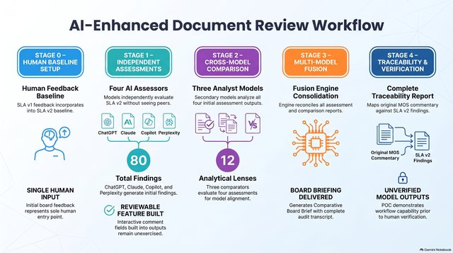

AI-enhanced, multi-participant document review & assessment workflow · phase names/numbers may be misaligned across documents (emergent design)
Download full resolution (PNG)
Close

The workflow in brief. SLA v2 — the only document used — was assessed independently by four AI models, producing 80 findings; each assessment also shipped as an interactive, reviewer-ready document. The four assessments then went to three different models, each comparing all four for alignment and disagreement — twelve lenses in total (4 × 3). A fusion engine condensed the assessments and the comparison reports into a single final report, and the original MOS feedback on SLA v1 was compared against v2 and the model assessments to see what had been addressed. No human reviewed any AI output in this run — the only human input was the original MOS feedback — and the built-in reviewer-commenting features, though present, were not exercised. A note on numbering: phase names and numbers may not align perfectly across documents — the workflow design process was emergent. Read the full workflow narrative →New to this material? Open the roadmap first: the whole process in six stages — what each document consumed and produced, and how each stage fed the next. Then return to the stages below for the documents themselves.
The subject document and the board-level reviewer comments that prompted its revision.
Interactive assessment workspaces — filters, per-item status tracking, and note export. Open in a browser. 80 findings total.
One comparison report per model, comparing the 80 assessment items. HTML renders are the linked format; PDF and plain-text sources are listed in the inventory.
The three comparison models cross-checked each other; the corrected output became the Board brief. Recommendation: endorse the framework in principle; complete the pre-signature worklist before signature.
The workflow loops back to where it began: the original human feedback is checked against everything the AI layers produced. This is the step that turns a chain of model output into an auditable review.
Documents produced to navigate and trace the process itself.
Every file in the repository. Where a document exists in multiple formats, the canonical row is the version this hub links; other formats of the same document are marked alternate. “Effectively the same” was judged by content comparison, not filename.
| File | Format | Document | Status | Notes |
|---|---|---|---|---|
| Stage 0 — The agreement and original feedback | ||||
| USU_AGI_SLA_Revised_2026_BOT Review.pdf | SLA Draft 2.0 (base document) | canonical | Only version | |
| USU_original_SLA_Comments_Board_Summary.Claud.md | MD | MOS reviewer comments (board summary) | canonical | Only version |
| Stage 1 — Four independent AI reviews | ||||
| USU_AGI_SLA_Governance_Review_ChatGPT.html | HTML | ChatGPT assessment | canonical | Only version · interactive workspace |
| USU–AGI SLA Draft 2.0_ Review_Suggestions_Claude.html | HTML | Claude assessment | canonical | Only version · interactive workspace |
| USU–AGI SLA Draft 2.0_ Review_Suggestions_Copilot.html | HTML | Copilot assessment | canonical | Only version · interactive workspace |
| USU–AGI SLA Review Studio_Perplexity.html | HTML | Perplexity assessment | canonical | Only version · interactive workspace |
| Stage 2 — Cross-model comparison reports (HTML render + PDF export + MD source of each) | ||||
| GPT-Analysis-of-all-reviews.html | HTML | GPT comparison report | canonical | Same document; HTML linked per format policy |
| GPT-Analysis-of-all-reviews.pdf | alternate | |||
| GPT-Analysis-of-all-reviews.MD | MD | alternate | ||
| Gemini-Analysis-of-all-reviews.html | HTML | Gemini Pro comparison report | canonical | Same document; HTML linked per format policy |
| Gemini-Analysis-of-all-reviews.pdf | alternate | |||
| Gemini-Analysis-of-all-reviews.MD | MD | alternate | ||
| Haiku-Analysis-of-all-reviews.html | HTML | Claude Haiku comparison report | canonical | Same document; HTML linked per format policy |
| Haiku-Analysis-of-all-reviews.pdf | alternate | |||
| Haiku-Analysis-of-all-reviews.MD | MD | alternate | ||
| Stage 3 — Fusion engine and final Board brief | ||||
| Fusion-GPT-Claude-Haiku-Gemini-Pro.pdf | Fusion engine transcript | canonical | Same document; PDF linked per format policy | |
| Fusion-GPT-Latest-Claude-Haiku-Latest-Gemini-Pro-Latest-2026-11-20T13-30-15-958Z.md | MD | alternate | ||
| Fusion-GPT-Haiku-Gemini.HTML | HTML | Final Comparative Board Brief | canonical | Same document; HTML linked per format policy |
| Fusion-GPT-Haiku-Gemini.PDF | alternate | |||
| Working documents — hubs and reports | ||||
| Review-Process-Roadmap.html | HTML | Review roadmap | canonical | Only version · AI-prepared navigation aid |
| Workflow-Narrative.html | HTML | Workflow narrative | canonical | Only version · AI-prepared navigation aid |
| Asset — workflow diagram (mini and view derivatives generated from the PNG) | ||||
| AI-Enhanced_Document_Review_Workflow.png | PNG | Workflow diagram | canonical | Full-resolution original; .mini.jpg and .view.jpg derivatives generated from it for embedding |
| AI-Enhanced_Document_Review_Workflow.mini.jpg | JPG | alternate | ||
| AI-Enhanced_Document_Review_Workflow.view.jpg | JPG | alternate | ||
| USU-AGI_SLA_Review_Master_View.html | HTML | Master View | canonical | Same document; HTML linked per format policy |
| USU-AGI_SLA_Review_Master_View.md | MD | alternate | ||
| MOS-Feedback_vs_Draft2_vs_AI-Reviews_Comparison_DRAFT-1.html | HTML | Traceability report (Draft 1) | canonical | Same document; HTML (paged, with nav) linked per format policy; PDF is an identical 9-page render; MD is the source |
| MOS-Feedback_vs_Draft2_vs_AI-Reviews_Comparison_DRAFT-1.pdf | alternate | |||
| MOS-Feedback_vs_Draft2_vs_AI-Reviews_Comparison_DRAFT-1.md | MD | alternate | ||
| README.html | HTML | Repository readme | hub | About, conventions, hosting, provenance |
| index.html | HTML | Document hub (this page) | hub | Entry point for hosted deployment |
USU–AGI SLA multi-model AI review · document hub generated Nov 20, 2026. Canonical-format policy: HTML → PDF → MD. Content-equivalence for the fusion transcript, comparison reports, Board brief, and working reports was verified by text comparison before mapping versions.